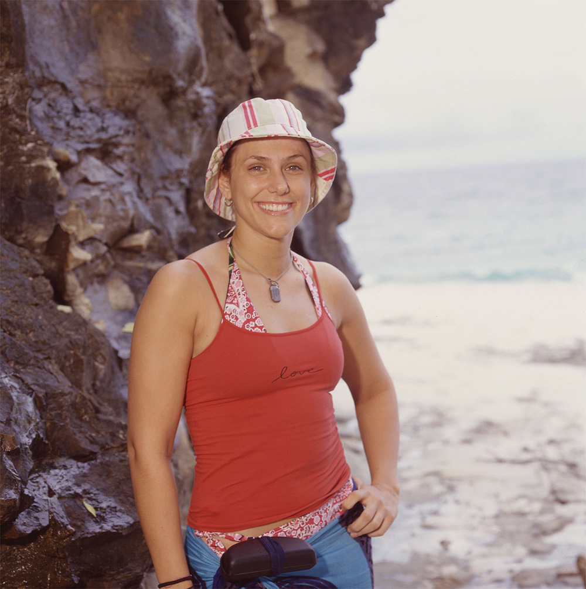
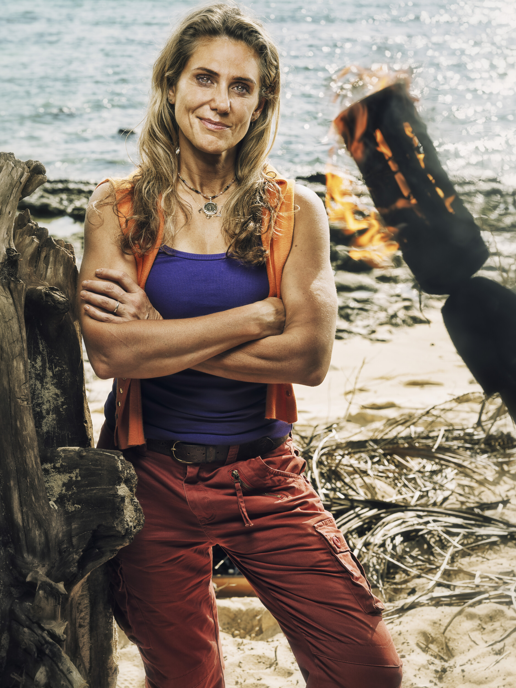

Jenna Lewis-Dougherty


Episode 1
Jenna came in playing aggressively, reportedly writing "CIRIE IS FIRST" in the sand. She pulled Savannah and Joe into her plan to vote out Cirie, and believed Christian was on board. But Christian used Rick to tip off Cirie, and the entire tribe flipped on Jenna. She was voted out 7-1 (her lone vote was for Cirie). In exit interviews she said she hopes Cila loses every challenge and that Christian set her up.
Alliances
Attempted to build a voting bloc with Savannah, Joe, and Christian against Cirie. All of them voted against her instead.
About
Jenna Lewis-Dougherty is a Survivor original, having competed on the very first season (Borneo) back in 2000. She returned for All-Stars (Season 8) and came into Season 50 with reverence from the cast as a representative of the show's earliest days.